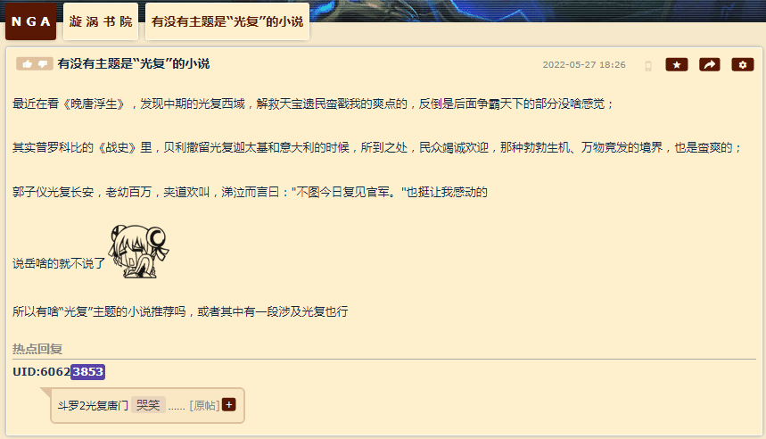
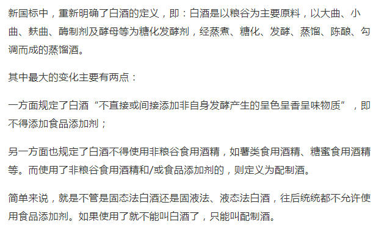

fanhan-inside
备份素材：
相关剧情：
“亲爱的绿蒂，感谢你的关怀，收到你推荐的药物之后，头疼已经好多了”，维特看了一眼桌上的药瓶，再对比旁边的内画鼻烟壶，摇了摇头，写道，“美茵河畔法兰克福的拜耳真是个神奇的公司，海洛因的效果比阿芙蓉强得多”。
“当然这也导致了我的灵感爆发，简直不逊色于‘直中取’蒙德里安和‘曲中求’草間弥生，现在我的目标是埃舍尔”，维特看着病历照抄，“本来患者我最近经常发呆，情绪多变，睡眠也很不规律，还经常表现出莫名其妙的冷漠和敌意”。
“从鹿特丹逆流而上的丐帮头目告诉我，这种药物最近在尼德兰非常流行，销量已经超过大麻了”，维特看了一眼统计报表，继续写，“不知道不来梅当地的情况什么样，销售渠道是不是也被丐帮所垄断”。
“这些人，在反抗马德里的独立战争中表现出色，但是退役之后的安置工作就很不恰当”，维特写道，“其实在那十二年的停战期间，皮破肉烂手足残缺的他们，就险些真的以乞讨为生”。
⸺《范版西幻设定集》之十一〈从雪山来到大海去〉
“您看，布拉格特许‘王国’牌”，菲利克斯指示商标位置，“本店一向使用优质食材，提供精品酒水”。
“这明明是‘王国’！”盖世太保仔细端详，勃然作色，“我看你像英国间谍！”
“啥？”菲利克斯大惊失色，又看了看商标，扭头问乌呼鲁，“怎么回事？”
“黑乎乎的字母凑成一坨，我哪儿认得出来啊”，乌呼鲁喊冤，“都是老主顾了，没注意看商标”。
“你说的那家老主顾，已经连夜跑路了！”盖世太保的情报网也不是摆设，“你们是最后一笔交易”。
“您是说，跑路之前清仓大甩卖”，菲利克斯试探着回答，“把之前砸手里的假冒伪劣产品都脱手，赚一笔是一笔，反正不要脸了”。
“我怀疑他是英国毒贩的销售网点！”盖世太保上纲上线，“啤酒太好喝了没注意到，昨晚到家才发现浓度有问题”。
“要不……您尝尝渣打啤酒？”菲利克斯大致明白了盖世太保的权限，“市委市政府特意修宪，全票通过补充条款，行宫也没意见”。
⸺《范版西幻设定集》之十四〈食不厌精脍不厌细〉
相关内容的展开都在「设定集草稿长编」当中，最近正在整理成卡片形式的备忘录上传「囧斋」站。
长话短说，自打在码字正文、注释以及相关谈笑风生当中提及上世纪九十年代中期户口本堂妹问我「走私军火、毒品、人口你想干哪一行」而我什么都不想干被连番追问之下勉强选了「军火」的个人亲身经历的第一手材料之后，自打查询到学术档案《陕甘宁及晋绥边区特产问题研究》并作为文献引用之后，自打回忆户口本奶奶大同石老太太曾经对街坊邻居炫耀过当初在归绥包头从事纯天然绿色环保无污染麻醉药品产业链相关工作（左手攥着铁筒捏着「大罂蒂果」右手持小刀一划拉白花花的大烟膏子就流下来了很快就变黑了）之后，繁荣的简体中文互联网上就有大批色目心理学家论证我「患上了“看谁都是毒贩”的受迫害妄想狂综合症」，与此同时古拉格北里社区「军休所」出没的与哥布林勾肩搭背称兄道弟推杯换盏的离退休鲜卑名将之花的气焰开始越发嚣张。
这其中一定存在着统计上的相关性。
fanhan-inside
补充素材：

相关注释：
第十一篇设定昨晚更新了一段，今天中午又更新了一段，差不多篇幅能压住了。最后两段「惊愕」需要参考现实局势，包括但不限于南不列颠及北爱尔兰联合王国白金汉宫唐宁街十号西敏寺，以及我中华兲朝上国锤镰帮十九届四中全会。
别的懒得说明，就把「猫图」在正文脚注中罗列出来，画家是路易斯・韦恩（Louis Wain），至于前因后果各位可以自行搜索。这里剧透一点，架空中也不是「飒爽美少年」自己画的，这「阴阳人两面派」也没有被碧池推销的海洛因染上毒瘾，渣男渣女各怀鬼胎而已。
⸺《设定集》注释〔８８〕
在前面的注释当中已经提到了「英德毒品战争」已经打响，以本位面为原型可以理解为可卡因对海洛因，架空中还有其他炼金术士炮制的「奇幻」级别的麻醉药物。
补充网络素材《德国啤酒纯度法》以及《如何看待1516德国啤酒纯净法的颁布目的？是为了收税还是为了啤酒品质？》，大致就是正文中各种「居酒屋」需要面对「工商」「税务」「食药监局」甚至「缉毒署」之类机构的背景。而酿造权与住宅绑定，以及酿酒用大锅登记为不动产，也是中世纪的实况。正文中不再以旁白或对话展开。
特别提醒注意前者「导致很多传统酿造工艺（巴伐利亚以外）和地域配方的失传，著名的例子包括德国北部的香料啤酒和和樱桃啤酒」这句，以及后者「当时啤酒酿造陷于狂热混乱状态，不少人在其中添加致幻的草药，相当于现在的软毒品，这些酿酒师就不是什么正经人了，被称作啤酒巫师，当时拜仁地区就有大量的酿造师被当作巫师处死」这句。于是「渣打啤酒」入境销售才需要「修宪」，这是由技术细节导致的情节。
⸺《设定集》注释〔９４〕
fanhan-inside
补充情报兼素材：

长话短说，1998年山西甲醇汾酒事件在当时引起了轩然大波，寒假结束之后返校的同学们都在谈论老家「酒桌文化」发生的动荡。具体细节各位读者可自行搜索。
眼下这个「相关法律法规与政策」的出台，可以对照当年德意志民族神圣罗马帝国「啤酒纯度法」理解，太阳底下没有新鲜事，一切历史都是当代史。
不惮以最大的恶意揣测，被破获的各种「假冒伪劣」酒精类饮料所使用的「添加剂」当中肯定有毒品，至少是致幻类「纯天然绿色环保」原材料。
至于为什么没有引起「轩然大波」，一方面可以参考「军休所」动向，当年在「我党」最艰难的时期与「老一辈工农红军战士」联手贩卖时任党和政府明文禁止的「管制药物」的江湖好汉草莽豪杰乃至基层地痞流氓泼皮无赖「推销员」之间建立的深厚的「革命情谊」一直延续至今，在「革命胜利」之后这庞大的「人脉」纷纷洗白染红上岸摇身一变为体制栋梁，触角一直延伸到「“海里”“海边”“中央军委/政法委”」或者直说本来就是从「晋绥陕甘宁“中央军委/政法委”」延伸出来的。
另一方面，应该有大批「色目心理学家」配合「色目药剂师」到处「做实验」，计算毒品添加多少分量可以不被发现或者属于「人脉」足够掩护的程度，致幻剂添加多少可以确保在组织最需要的时候发动这些癫狂的「终端用户」凑够上百万人孤立突发偶然片面的奔赴天安门广场「杀去偏殿夺了鸟位」，这也与摩拳擦掌做「期货开国元勋」状的哥布林之线索相吻合。
在古为今用之后就可以今为古用了也，我中华兲嘲上国自打六月一日开始的「酒精饮料市场」相关动向，都能挪用为《设定集》「英德毒品战争」之素材。